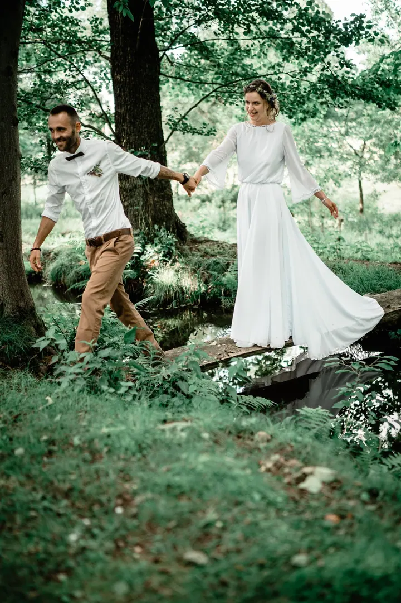
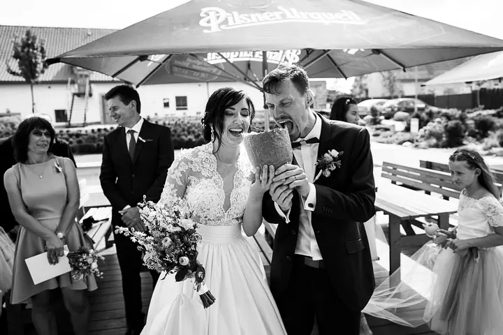

jedna
Svatby
Svatební den vyprávím jako příběh, ten tichý i ten slavnostní. Hledám světlo, emoci a atmosféru, kterou si budete chtít pamatovat.


Jmenuji se Pavel Křeček a fotím pod značkou Flaypix. Nejraději fotím svatby, ale baví mě i portréty a vyprávění příběhů lidí, kteří si spolu užívají svůj den. Fotografie je pro mě víc než jen zachycení reality.
Více o mně
Co fotím
jedna
Svatební den vyprávím jako příběh, ten tichý i ten slavnostní. Hledám světlo, emoci a atmosféru, kterou si budete chtít pamatovat.
dvě
Intimní portréty, lifestyle i glamour. S citem pro detail, kompozici a světlo, které k vám sedí.
tři
Fotím business portréty, reklamu i nemovitosti. Pomáhám firmám s vizuální identitou a hledám rovnováhu mezi estetikou a sdělením.
Dokumentuji firemní akce, oslavy, eventy i školní focení. Každá událost má svůj rytmus a já ho chci zachytit tak, jak opravdu plynul.
Každý žánr má svůj rytmus, světlo a emoci.

Za objektivem
Jsem trošku blázen, duší navždy dítětem, které jen s věkem mění cenu svých hraček. Jsem kreativně poznamenaný, pro život nadšený a mám rád všechno dobré. A dělám práci, která mě neskutečně baví: fotím.
Fotím lifestyle, svatby, business portréty, nemovitosti, eventy, oslavy, firemní akce, školní focení, reklamu i glamour. Každý žánr má svůj rytmus, světlo a emoci a já je hledám s citem pro detail, kompozici a atmosféru.
Pracuji s lidmi, značkami i prostorem. Ať jde o intimní portrét, vizuální identitu firmy, nebo o celý svatební den, vždycky hledám rovnováhu mezi estetikou a tím, co má fotka říct. Všechno je o domluvě, o důvěře, otevřenosti a společném cíli.
Pavel
Ozvěte se mi telefonem nebo přes formulář. Probereme termín, místo a to, co od fotek čekáte.
Společně si ujasníme průběh dne nebo focení, světlo a místa, kde budeme fotit.
Na místě pracuji v klidu a nenápadně. Hledám emoce, detaily a atmosféru a do ničeho vás netlačím.
Vyberu nejsilnější snímky, pečlivě je upravím a předám vám je v galerii.
Portfolio
Fotografie jsou ilustrační
Otázky
Ne. Kromě svateb fotím portréty, lifestyle, glamour, business portréty, reklamu, nemovitosti, eventy, oslavy, firemní akce i školní focení.
Cena záleží na rozsahu a typu focení. Všechno je o domluvě, napište mi nebo zavolejte a připravím vám nabídku na míru.
Nejrychlejší je zavolat na +420 777 997 661 nebo vyplnit kontaktní formulář. Podle volného termínu se domluvíme na dalším postupu.
Termín předání se odvíjí od rozsahu focení. Konkrétní čas vám řeknu předem, ještě než se do focení pustíme.
Napište pár vět o tom, co si představujete. · +420 777 997 661